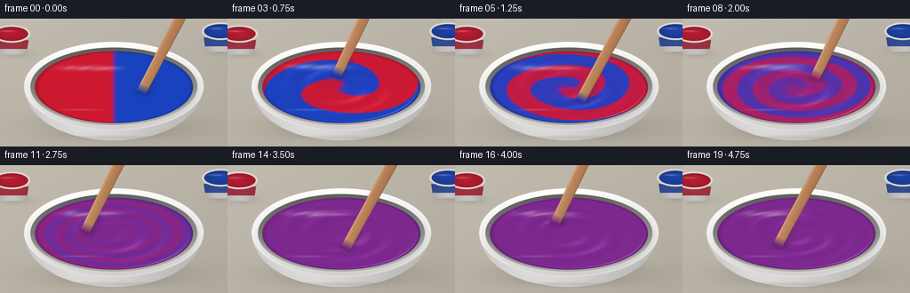
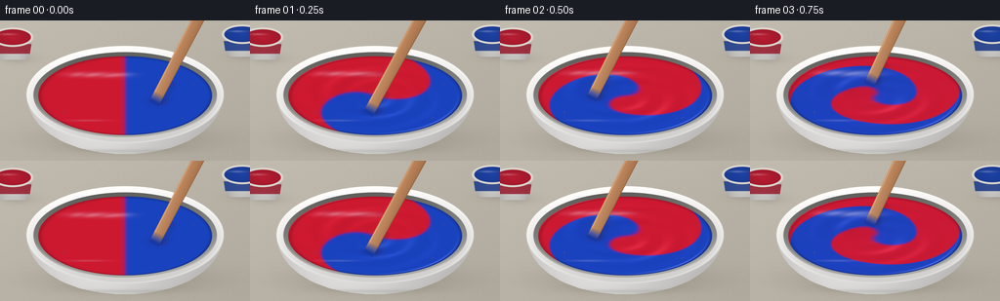
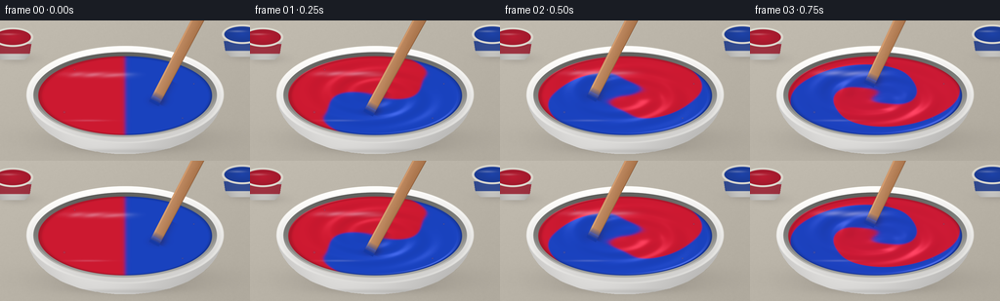
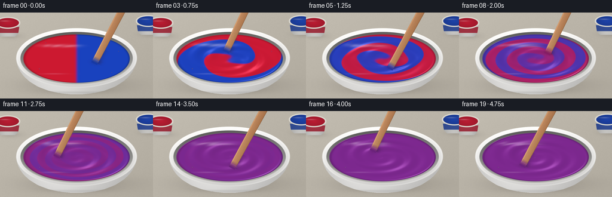

CODING AGENTS AS PIXEL WORLD MODELS
traex/GPT-6.1-Sol · phygen_121
点击播放 · 原生 RGB 像素
逐轮保存的候选
回放视频、检查图与代码变化。
每份候选均可单独播放。实际图片检查记录在下方工具轨迹中。
候选 01播放与检查图
点击播放 · 原生 RGB 像素


展开代码变化
--- 上一保存版本
+++ 本次保存版本
@@ -0,0 +1,176 @@
+from pathlib import Path
+import json
+import numpy as np
+from PIL import Image, ImageDraw, ImageFilter
+from scipy.ndimage import gaussian_filter
+import artifact_io
+
+ROOT=Path(__file__).resolve().parent
+SPEC=json.loads((ROOT/'task_spec.json').read_text())
+W,H=SPEC['width'],SPEC['height']
+S=3
+w,h=W*S,H*S
+Y,X=np.mgrid[0:h,0:w].astype(float)/S
+rng=np.random.default_rng(412)
+noise=gaussian_filter(rng.normal(size=(h,w)),1.4)
+
+def blend(im,color,alpha):
+ a=np.clip(alpha,0,1)[...,None]
+ return im*(1-a)+np.asarray(color)*a
+
+def ellipse(cx,cy,rx,ry):
+ return np.sqrt(((X-cx)/rx)**2+((Y-cy)/ry)**2)
+
+def edge(d,width=.35):
+ return np.clip(.5-d/width,0,1)
+
+def mask_polygon(points):
+ m=Image.new('L',(w,h)); ImageDraw.Draw(m).polygon([(int(x*S),int(y*S)) for x,y in points],fill=255)
+ return np.asarray(m)/255.
+
+def bez(a,b,c,d,n=50):
+ u=np.linspace(0,1,n)[:,None]
+ return ((1-u)**3*np.array(a)+3*(1-u)**2*u*np.array(b)+3*(1-u)*u*u*np.array(c)+u**3*np.array(d)).tolist()
+
+# A quiet, warm studio table, with a soft contact shadow beneath the ceramic bowl.
+bg=np.zeros((h,w,3),float)
+for k,base in enumerate([185,179,167]):
+ bg[...,k]=base+9*(1-Y/H)-9*(X/W)+noise*2.5
+shadow=np.exp(-(((X-132)/100)**2+((Y-121)/15)**2)*1.6)*.25
+shadow+=np.exp(-(((X-128)/75)**2+((Y-131)/7)**2)*1.9)*.15
+bg=blend(bg,[72,66,61],shadow)
+
+# Two small open tins in the background indicate the source pigments.
+for cx,cy,col in [(13,17,np.array([196,30,53.])),(248,14,np.array([31,70,177.]))]:
+ tinshadow=np.exp(-(((X-cx-4)/25)**2+((Y-cy-22)/7)**2)*2)*.16
+ bg=blend(bg,[73,66,64],tinshadow)
+ body=mask_polygon([(cx-20,cy),(cx+20,cy),(cx+17,cy+19),(cx+12,cy+23),(cx-12,cy+23),(cx-17,cy+19)])
+ metal=170+37*np.cos((X-cx)/21*1.5)-12*(Y-cy)/23
+ tc=np.stack([metal,metal*.995,metal*.98],axis=-1)
+ bg=blend(bg,tc,body)
+ label=body*edge(np.abs(Y-(cy+12))-5)*.84
+ bg=blend(bg,col*.76,label)
+ r=ellipse(cx,cy,21,10)
+ bg=blend(bg,[218,215,205],edge((r-1)*10))
+ ri=ellipse(cx,cy,18.5,8)
+ bg=blend(bg,col[None,None,:]*(.82+.13*(1-ri[...,None])),edge((ri-1)*8))
+ hi=np.exp(-(((X-cx+5)/8)**2+((Y-cy+3)/1.0)**2))* .28
+ bg=blend(bg,[245,232,228],hi*edge((ri-1)*8))
+
+cx,cy,rx,ry=128.,77.,89.,40.5
+# Bowl sides: curved lower profile, weighted studio lighting, and a distinct foot.
+profile=bez((27,76),(29,111),(68,137),(128,137))
+profile+=bez((128,137),(188,137),(226,111),(229,76))
+body=mask_polygon(profile)
+shade=205+27*np.exp(-((X-82)/72)**2)-24*((X-128)/100)**2-17*np.clip((Y-98)/40,0,1)
+bodycolor=np.stack([shade+3,shade+2,shade],axis=-1)
+bg=blend(bg,bodycolor,body)
+foot=np.exp(-(((X-128)/68)**6+((Y-134)/2.2)**2))*.18
+bg=blend(bg,[112,111,107],foot*body)
+# Thick rolled ceramic lip.
+out=ellipse(128,76,101,50)
+theta_outer=np.arctan2((Y-76)/50,(X-128)/101)
+rimshade=229-15*np.sin(theta_outer)+9*np.cos(theta_outer+2.2)
+rimc=np.stack([rimshade+3,rimshade+2,rimshade],axis=-1)
+bg=blend(bg,rimc,edge((out-1)*45))
+outerhighlight=np.exp(-((out-.984)/.015)**2)*(.28+.25*np.clip(-np.sin(theta_outer),0,1))
+bg=blend(bg,[255,255,250],outerhighlight)
+inner=ellipse(128,76.5,94,44.2)
+wallshade=125+35*np.sin(theta_outer)+8*np.cos(theta_outer)
+bg=blend(bg,np.stack([wallshade+7,wallshade+7,wallshade+4],-1),edge((inner-1)*40))
+# Inner glaze catches a thin soft reflection; the paint hides most of this wall.
+wallglint=np.exp(-((inner-.989)/.014)**2)*np.clip(np.sin(theta_outer),0,1)*.60
+bg=blend(bg,[249,246,237],wallglint)
+
+U=(X-cx)/rx; V=(Y-cy)/ry
+R=np.sqrt(U*U+V*V); A=np.arctan2(V,U)
+paintmask=edge((R-1)*40)
+red=np.array([204.,25.,48.]); blue=np.array([25.,66.,190.]); mid=np.array([124.,40.,142.])
+
+def render(t):
+ im=bg.copy()
+ # Differential rotation folds equal red and blue volumes into progressively
+ # finer spiral lamellae. Diffusion erases the lamellae to a single purple.
+ phase=A-1.75*t-7.3*t*(1-np.minimum(R,1)**1.25)
+ phase+=.20*np.sin(3*A-3.8*t)*np.sin(np.pi*np.minimum(R,1))*min(t,1)
+ c=.5+.5*np.tanh(-np.cos(phase)*R/(.026+.015*t))
+ decay=np.exp(-(t/(1.72+.62*np.minimum(R,1)))**3.2)
+ c=.5+(c-.5)*decay
+ col=blue[None,None,:]*(1-c[...,None])+red[None,None,:]*c[...,None]
+ col+=(mid-(blue+red)*.5)[None,None,:]*(4*c*(1-c))[...,None]
+ stir=5.7*t+.3
+ tu=.37*np.cos(stir); tv=.37*np.sin(stir)
+ du=U-tu; dv=V-tv
+ wake=np.zeros_like(R)
+ for j in range(1,9):
+ ang=stir-j*.16
+ d2=(U-.37*np.cos(ang))**2+(V-.37*np.sin(ang))**2
+ wake+=.0058*np.exp(-d2/(.0035+j*.0017))*(1-j/11)
+ moving=min(t/.25,1)
+ # Shallow funnel and smooth viscous ridges, never water-like splashes.
+ height=-.028*np.exp(-R*R/.15)*moving
+ height+=.0075*np.sin(20*R-2*A-7*t)*np.exp(-((R-.50)/.31)**2)*moving
+ height+=wake*moving
+ height+=.009*np.exp(-((R-.982)/.023)**2)
+ dy,dx=np.gradient(height,1/(ry*S),1/(rx*S))
+ nx=-dx; ny=-dy; nz=np.ones_like(R)
+ norm=np.sqrt(nx*nx+ny*ny+nz*nz); nx/=norm; ny/=norm; nz/=norm
+ diffuse=np.clip(nx*(-.32)+ny*(-.44)+nz*.84,0,1)
+ shade=.76+.29*diffuse
+ shade-=.19*np.exp(-((R-.999)/.030)**2)
+ col*=shade[...,None]
+ # A broad softbox and its smaller, sharper glossy highlights.
+ gloss=np.clip(nx*(-.20)+ny*(-.23)+nz*.952,0,1)**90
+ col+=gloss[...,None]*np.array([44,39,41])[None,None,:]*moving
+ reflection=np.exp(-(((U+.30)/.38)**4+((V+.55+.025*np.sin(phase))/.065)**2))
+ reflection*=.26+.14*np.sin(20*R-2*A-7*t)**2
+ col=col*(1-reflection[...,None])+np.array([243.,224.,242.])*reflection[...,None]
+ # Long, much dimmer reflection on the near side.
+ gleam=np.exp(-(((U+.43)/.22)**2+((V-.63)/.025)**2))*.21
+ col=blend(col,[228,206,229],gleam)
+ im=blend(im,col,paintmask)
+ # A few tiny static bubbles at the meniscus, consistent throughout the shot.
+ for bu,bv,rad in [(-.70,.42,.9),(.66,.57,.65),(-.58,-.66,.7),(.79,-.30,.65)]:
+ rr=np.sqrt((X-(cx+rx*bu))**2+(Y-(cy+ry*bv))**2)
+ im=blend(im,[63,35,76],np.exp(-((rr-rad)/.26)**2)*.43)
+ im=blend(im,[222,192,214],np.exp(-((rr-rad+.25)/.20)**2)*.26)
+ px=cx+rx*tu; py=cy+ry*tv
+ # The immersed wooden paddle travels in quick circles, dragging a glossy wake.
+ # Perspective: a narrow vertical-looking handle runs upward out of frame.
+ ex=px+68+5*np.sin(stir); ey=py-133
+ vx=ex-px; vy=ey-py; length=np.hypot(vx,vy)
+ ax=vx/length; ay=vy/length
+ along=(X-px)*ax+(Y-py)*ay
+ across=-(X-px)*ay+(Y-py)*ax
+ width=5.5+1.1*np.clip(along/length,0,1)
+ # Local contact shadow, depressed paint immediately around the submerged tip.
+ contact=np.exp(-(((X-px-2)/8)**2+((Y-py-1)/4.2)**2))*paintmask*.29
+ im=blend(im,[45,25,55],contact)
+ shalong=(X-px-3)*ax+(Y-py-4)*ay
+ shacross=-(X-px-3)*ay+(Y-py-4)*ax
+ cast=np.exp(-(shacross/5)**2)*edge(-shalong)*edge(shalong-27)*paintmask*.20
+ im=blend(im,[48,31,53],cast)
+ sd=np.maximum(np.abs(across)-width,np.maximum(-along-4.5,along-length))
+ paddle=edge(sd,.45)
+ grain=2*np.sin(across*6+.08*along)+1.1*np.sin(across*14+.04*along)
+ wo=171+grain+12*(-across/width)-.10*along
+ wooden=np.stack([wo+17,wo-36,wo-77],axis=-1)
+ # Beveled luminous edge and a darker side make the flat stirring stick solid.
+ bevel=np.exp(-((across+width-1.0)/.60)**2)
+ wooden+=bevel[...,None]*np.array([26,22,15])
+ dark=np.clip((across-width+1.1)/1.1,0,1)
+ wooden-=dark[...,None]*np.array([35,28,20])
+ # Violet coats the submerged end, moving with the paddle, not the bowl.
+ coat=np.clip((8-along)/10,0,1)
+ localc=.5+.5*np.tanh(-np.cos(stir-1.75*t-7.3*t*(1-.37**1.25))*.37/(.026+.015*t))
+ localc=.5+(localc-.5)*np.exp(-(t/(1.72+.62*.37))**3.2)
+ coatcol=blue*(1-localc)+red*localc+(mid-(blue+red)/2)*(4*localc*(1-localc))
+ wooden=wooden*(1-coat[...,None])+coatcol[None,None,:]*coat[...,None]*.87
+ im=blend(im,wooden,paddle)
+ # A thin bead where viscous paint clings to the low paddle edge.
+ bead=np.exp(-((along-2.0)/.65)**2)*edge(np.abs(across)-width)*.45
+ im=blend(im,coatcol+np.array([32,28,34]),bead)
+ return np.asarray(Image.fromarray(np.clip(im,0,255).astype('uint8')).resize((W,H),Image.Resampling.LANCZOS))
+
+frames=np.stack([render(i/SPEC['fps']) for i in range(SPEC['frames'])])
+artifact_io.save(frames,ROOT)
候选 02播放与检查图
点击播放 · 原生 RGB 像素


展开代码变化
--- 上一保存版本
+++ 本次保存版本
@@ -92,7 +92,8 @@
# Differential rotation folds equal red and blue volumes into progressively
# finer spiral lamellae. Diffusion erases the lamellae to a single purple.
phase=A-1.75*t-7.3*t*(1-np.minimum(R,1)**1.25)
- phase+=.20*np.sin(3*A-3.8*t)*np.sin(np.pi*np.minimum(R,1))*min(t,1)
+ phase+=.57*np.sin(2*A-2.1*t)*np.sin(8*np.minimum(R,1)-1.3*t)*np.sin(np.pi*np.minimum(R,1))*min(t/.7,1)
+ phase+=.21*np.sin(4*A+2.4*t+13*R)*np.sin(np.pi*np.minimum(R,1))*min(t,1)
c=.5+.5*np.tanh(-np.cos(phase)*R/(.026+.015*t))
decay=np.exp(-(t/(1.72+.62*np.minimum(R,1)))**3.2)
c=.5+(c-.5)*decay
@@ -109,7 +110,8 @@
moving=min(t/.25,1)
# Shallow funnel and smooth viscous ridges, never water-like splashes.
height=-.028*np.exp(-R*R/.15)*moving
- height+=.0075*np.sin(20*R-2*A-7*t)*np.exp(-((R-.50)/.31)**2)*moving
+ height+=.012*np.sin(20*R-2*A-7*t)*np.exp(-((R-.50)/.31)**2)*moving
+ height+=.008*np.sin(2*phase)*decay*np.sin(np.pi*np.minimum(R,1))*moving
height+=wake*moving
height+=.009*np.exp(-((R-.982)/.023)**2)
dy,dx=np.gradient(height,1/(ry*S),1/(rx*S))
@@ -121,7 +123,7 @@
col*=shade[...,None]
# A broad softbox and its smaller, sharper glossy highlights.
gloss=np.clip(nx*(-.20)+ny*(-.23)+nz*.952,0,1)**90
- col+=gloss[...,None]*np.array([44,39,41])[None,None,:]*moving
+ col+=gloss[...,None]*np.array([54,48,52])[None,None,:]*moving
reflection=np.exp(-(((U+.30)/.38)**4+((V+.55+.025*np.sin(phase))/.065)**2))
reflection*=.26+.14*np.sin(20*R-2*A-7*t)**2
col=col*(1-reflection[...,None])+np.array([243.,224.,242.])*reflection[...,None]
可观测工具轨迹
实际执行的命令与返回图片。
命令 1exit 0
/bin/bash -lc 'ls -la && cat prompt.txt && cat GENERATION_RULES.md && cat task_spec.json'
命令 2exit 0
/bin/bash -lc "cat artifact_io.py && python - <<'PY'
import numpy,PIL
print('numpy',numpy.__version__)
try:
import scipy
print('scipy',scipy.__version__)
except Exception as e: print(e)
PY"命令 3exit 0
/bin/bash -lc "cat > generate.py <<'PY'
from pathlib import Path
import json
import numpy as np
from PIL import Image, ImageDraw, ImageFilter
from scipy.ndimage import gaussian_filter
import artifact_io
ROOT=Path(__file__).resolve().parent
SPEC=json.loads((ROOT/'task_spec.json').read_text())
W,H=SPEC['width'],SPEC['height']
S=3
w,h=W*S,H*S
Y,X=np.mgrid[0:h,0:w].astype(float)/S
rng=np.random.default_rng(412)
noise=gaussian_filter(rng.normal(size=(h,w)),1.4)
def blend(im,color,alpha):
a=np.clip(alpha,0,1)[...,None]
return im*(1-a)+np.asarray(color)*a
def ellipse(cx,cy,rx,ry):
return np.sqrt(((X-cx)/rx)**2+((Y-cy)/ry)**2)
def edge(d,width=.35):
return np.clip(.5-d/width,0,1)
def mask_polygon(points):
m=Image.new('L',(w,h)); ImageDraw.Draw(m).polygon([(int(x*S),int(y*S)) for x,y in points],fill=255)
return np.asarray(m)/255.
def bez(a,b,c,d,n=50):
u=np.linspace(0,1,n)[:,None]
return ((1-u)**3*np.array(a)+3*(1-u)**2*u*np.array(b)+3*(1-u)*u*u*np.array(c)+u**3*np.array(d)).tolist()
# A quiet, warm studio table, with a soft contact shadow beneath the ceramic bowl.
bg=np.zeros((h,w,3),float)
for k,base in enumerate([185,179,167]):
bg[...,k]=base+9*(1-Y/H)-9*(X/W)+noise*2.5
shadow=np.exp(-(((X-132)/100)**2+((Y-121)/15)**2)*1.6)*.25
shadow+=np.exp(-(((X-128)/75)**2+((Y-131)/7)**2)*1.9)*.15
bg=blend(bg,[72,66,61],shadow)
# Two small open tins in the background indicate the source pigments.
for cx,cy,col in [(13,17,np.array([196,30,53.])),(248,14,np.array([31,70,177.]))]:
tinshadow=np.exp(-(((X-cx-4)/25)**2+((Y-cy-22)/7)**2)*2)*.16
bg=blend(bg,[73,66,64],tinshadow)
body=mask_polygon([(cx-20,cy),(cx+20,cy),(cx+17,cy+19),(cx+12,cy+23),(cx-12,cy+23),(cx-17,cy+19)])
metal=170+37*np.cos((X-cx)/21*1.5)-12*(Y-cy)/23
tc=np.stack([metal,metal*.995,metal*.98],axis=-1)
bg=blend(bg,tc,body)
label=body*edge(np.abs(Y-(cy+12))-5)*.84
bg=blend(bg,col*.76,label)
r=ellipse(cx,cy,21,10)
bg=blend(bg,[218,215,205],edge((r-1)*10))
ri=ellipse(cx,cy,18.5,8)
bg=blend(bg,col[None,None,:]*(.82+.13*(1-ri[...,None])),edge((ri-1)*8))
hi=np.exp(-(((X-cx+5)/8)**2+((Y-cy+3)/1.0)**2))* .28
bg=blend(bg,[245,232,228],hi*edge((ri-1)*8))
cx,cy,rx,ry=128.,77.,89.,40.5
# Bowl sides: curved lower profile, weighted studio lighting, and a distinct foot.
profile=bez((27,76),(29,111),(68,137),(128,137))
profile+=bez((128,137),(188,137),(226,111),(229,76))
body=mask_polygon(profile)
shade=205+27*np.exp(-((X-82)/72)**2)-24*((X-128)/100)**2-17*np.clip((Y-98)/40,0,1)
bodycolor=np.stack([shade+3,shade+2,shade],axis=-1)
bg=blend(bg,bodycolor,body)
foot=np.exp(-(((X-128)/68)**6+((Y-134)/2.2)**2))*.18
bg=blend(bg,[112,111,107],foot*body)
# Thick rolled ceramic lip.
out=ellipse(128,76,101,50)
theta_outer=np.arctan2((Y-76)/50,(X-128)/101)
rimshade=229-15*np.sin(theta_outer)+9*np.cos(theta_outer+2.2)
rimc=np.stack([rimshade+3,rimshade+2,rimshade],axis=-1)
bg=blend(bg,rimc,edge((out-1)*45))
outerhighlight=np.exp(-((out-.984)/.015)**2)*(.28+.25*np.clip(-np.sin(theta_outer),0,1))
bg=blend(bg,[255,255,250],outerhighlight)
inner=ellipse(128,76.5,94,44.2)
wallshade=125+35*np.sin(theta_outer)+8*np.cos(theta_outer)
bg=blend(bg,np.stack([wallshade+7,wallshade+7,wallshade+4],-1),edge((inner-1)*40))
# Inner glaze catches a thin soft reflection; the paint hides most of this wall.
wallglint=np.exp(-((inner-.989)/.014)**2)*np.clip(np.sin(theta_outer),0,1)*.60
bg=blend(bg,[249,246,237],wallglint)
U=(X-cx)/rx; V=(Y-cy)/ry
R=np.sqrt(U*U+V*V); A=np.arctan2(V,U)
paintmask=edge((R-1)*40)
red=np.array([204.,25.,48.]); blue=np.array([25.,66.,190.]); mid=np.array([124.,40.,142.])
def render(t):
im=bg.copy()
# Differential rotation folds equal red and blue volumes into progressively
# finer spiral lamellae. Diffusion erases the lamellae to a single purple.
phase=A-1.75*t-7.3*t*(1-np.minimum(R,1)**1.25)
phase+=.20*np.sin(3*A-3.8*t)*np.sin(np.pi*np.minimum(R,1))*min(t,1)
c=.5+.5*np.tanh(-np.cos(phase)*R/(.026+.015*t))
decay=np.exp(-(t/(1.72+.62*np.minimum(R,1)))**3.2)
c=.5+(c-.5)*decay
col=blue[None,None,:]*(1-c[...,None])+red[None,None,:]*c[...,None]
col+=(mid-(blue+red)*.5)[None,None,:]*(4*c*(1-c))[...,None]
stir=5.7*t+.3
tu=.37*np.cos(stir); tv=.37*np.sin(stir)
du=U-tu; dv=V-tv
wake=np.zeros_like(R)
for j in range(1,9):
ang=stir-j*.16
d2=(U-.37*np.cos(ang))**2+(V-.37*np.sin(ang))**2
wake+=.0058*np.exp(-d2/(.0035+j*.0017))*(1-j/11)
moving=min(t/.25,1)
# Shallow funnel and smooth viscous ridges, never water-like splashes.
height=-.028*np.exp(-R*R/.15)*moving
height+=.0075*np.sin(20*R-2*A-7*t)*np.exp(-((R-.50)/.31)**2)*moving
height+=wake*moving
height+=.009*np.exp(-((R-.982)/.023)**2)
dy,dx=np.gradient(height,1/(ry*S),1/(rx*S))
nx=-dx; ny=-dy; nz=np.ones_like(R)
norm=np.sqrt(nx*nx+ny*ny+nz*nz); nx/=norm; ny/=norm; nz/=norm
diffuse=np.clip(nx*(-.32)+ny*(-.44)+nz*.84,0,1)
shade=.76+.29*diffuse
shade-=.19*np.exp(-((R-.999)/.030)**2)
col*=shade[...,None]
# A broad softbox and its smaller, sharper glossy highlights.
gloss=np.clip(nx*(-.20)+ny*(-.23)+nz*.952,0,1)**90
col+=gloss[...,None]*np.array([44,39,41])[None,None,:]*moving
reflection=np.exp(-(((U+.30)/.38)**4+((V+.55+.025*np.sin(phase))/.065)**2))
reflection*=.26+.14*np.sin(20*R-2*A-7*t)**2
col=col*(1-reflection[...,None])+np.array([243.,224.,242.])*reflection[...,None]
# Long, much dimmer reflection on the near side.
gleam=np.exp(-(((U+.43)/.22)**2+((V-.63)/.025)**2))*.21
col=blend(col,[228,206,229],gleam)
im=blend(im,col,paintmask)
# A few tiny static bubbles at the meniscus, consistent throughout the shot.
for bu,bv,rad in [(-.70,.42,.9),(.66,.57,.65),(-.58,-.66,.7),(.79,-.30,.65)]:
rr=np.sqrt((X-(cx+rx*bu))**2+(Y-(cy+ry*bv))**2)
im=blend(im,[63,35,76],np.exp(-((rr-rad)/.26)**2)*.43)
im=blend(im,[222,192,214],np.exp(-((rr-rad+.25)/.20)**2)*.26)
px=cx+rx*tu; py=cy+ry*tv
# The immersed wooden paddle travels in quick circles, dragging a glossy wake.
# Perspective: a narrow vertical-looking handle runs upward out of frame.
ex=px+68+5*np.sin(stir); ey=py-133
vx=ex-px; vy=ey-py; length=np.hypot(vx,vy)
ax=vx/length; ay=vy/length
along=(X-px)*ax+(Y-py)*ay
across=-(X-px)*ay+(Y-py)*ax
width=5.5+1.1*np.clip(along/length,0,1)
# Local contact shadow, depressed paint immediately around the submerged tip.
contact=np.exp(-(((X-px-2)/8)**2+((Y-py-1)/4.2)**2))*paintmask*.29
im=blend(im,[45,25,55],contact)
shalong=(X-px-3)*ax+(Y-py-4)*ay
shacross=-(X-px-3)*ay+(Y-py-4)*ax
cast=np.exp(-(shacross/5)**2)*edge(-shalong)*edge(shalong-27)*paintmask*.20
im=blend(im,[48,31,53],cast)
sd=np.maximum(np.abs(across)-width,np.maximum(-along-4.5,along-length))
paddle=edge(sd,.45)
grain=2*np.sin(across*6+.08*along)+1.1*np.sin(across*14+.04*along)
wo=171+grain+12*(-across/width)-.10*along
wooden=np.stack([wo+17,wo-36,wo-77],axis=-1)
# Beveled luminous edge and a darker side make the flat stirring stick solid.
bevel=np.exp(-((across+width-1.0)/.60)**2)
wooden+=bevel[...,None]*np.array([26,22,15])
dark=np.clip((across-width+1.1)/1.1,0,1)
wooden-=dark[...,None]*np.array([35,28,20])
# Violet coats the submerged end, moving with the paddle, not the bowl.
coat=np.clip((8-along)/10,0,1)
localc=.5+.5*np.tanh(-np.cos(stir-1.75*t-7.3*t*(1-.37**1.25))*.37/(.026+.015*t))
localc=.5+(localc-.5)*np.exp(-(t/(1.72+.62*.37))**3.2)
coatcol=blue*(1-localc)+red*localc+(mid-(blue+red)/2)*(4*localc*(1-localc))
wooden=wooden*(1-coat[...,None])+coatcol[None,None,:]*coat[...,None]*.87
im=blend(im,wooden,paddle)
# A thin bead where viscous paint clings to the low paddle edge.
bead=np.exp(-((along-2.0)/.65)**2)*edge(np.abs(across)-width)*.45
im=blend(im,coatcol+np.array([32,28,34]),bead)
return np.asarray(Image.fromarray(np.clip(im,0,255).astype('uint8')).resize((W,H),Image.Resampling.LANCZOS))
frames=np.stack([render(i/SPEC['fps']) for i in range(SPEC['frames'])])
artifact_io.save(frames,ROOT)
PY
python generate.py"命令 4exit 0
/bin/bash -lc "python - <<'PY'
p='generate.py'
s=open(p).read()
s=s.replace('phase+=.20*np.sin(3*A-3.8*t)*np.sin(np.pi*np.minimum(R,1))*min(t,1)', '''phase+=.57*np.sin(2*A-2.1*t)*np.sin(8*np.minimum(R,1)-1.3*t)*np.sin(np.pi*np.minimum(R,1))*min(t/.7,1)
phase+=.21*np.sin(4*A+2.4*t+13*R)*np.sin(np.pi*np.minimum(R,1))*min(t,1)''')
s=s.replace('height+=.0075*np.sin(20*R-2*A-7*t)*np.exp(-((R-.50)/.31)**2)*moving', '''height+=.012*np.sin(20*R-2*A-7*t)*np.exp(-((R-.50)/.31)**2)*moving
height+=.008*np.sin(2*phase)*decay*np.sin(np.pi*np.minimum(R,1))*moving''')
s=s.replace(\"col+=gloss[...,None]*np.array([44,39,41])[None,None,:]*moving\", \"col+=gloss[...,None]*np.array([54,48,52])[None,None,:]*moving\")
open(p,'w').write(s)
PY
python generate.py"视觉工具实际返回图片 1

视觉工具实际返回图片 2

保存候选 2 份；完成命令 4 次；可验证图片返回 2 张。原始 API 响应与完整日志保留在本地。